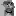

No more pussyfooting around for me: I’ve upgraded straight to being a pussy! Also I’m taking a month off Kratzen to pursue an autodidactic education that will get me more involved in games. Hope I don’t become the next Minecraft! ☞

See? I told you I was serious. Now please enjoy this overdue piece of prose while I prepare even more prose for you down the line, like the little prose doggies you are. Except for you. You know who you are. ☞
Froge is dead.

That’s right, dead serious about pushing updates to Kratzen! Unfortunately I had fallen into a petty series of timesink addictions and only wrote 2,000 words of “Nine months with Kratzen”, which will be coming later than usual.

We had to take some budget cuts for The Real 2017 Awards. So there’s no longer any live girls, we fired all the bartenders, and the obligatory Golden Froge award has been reduced to a smiley face sticker and a gift card for $20 at Sears. ☞
These are the only good opinions
Did you know that there are other people on the Internet? Shocking, I know! But you should check out the other “best of the year” blogs out there: Zero Punctuation, The Jimquisition, and videogamedunkey! Fellas? Call me. We’ll collab.
Presented in stunning FrogeVision! Live, from the Kratzen jail cell, comes none other than the best, the worst, the most mediocre games of 2017! Bonus points to games that came out in 2017, and also there’s some freebies thrown in there. ☞